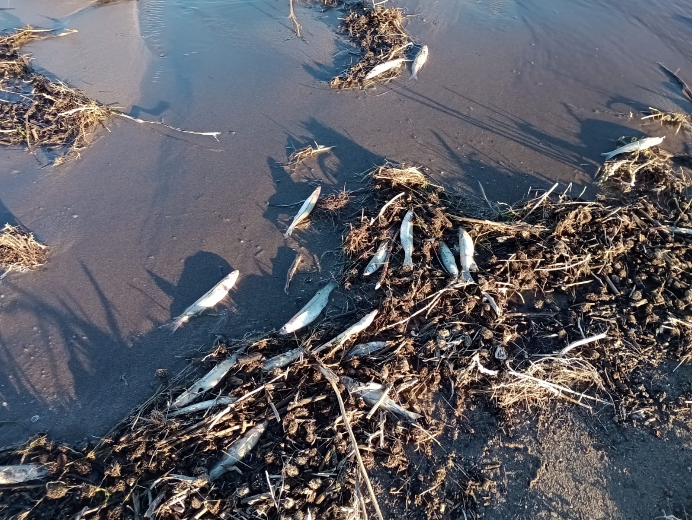
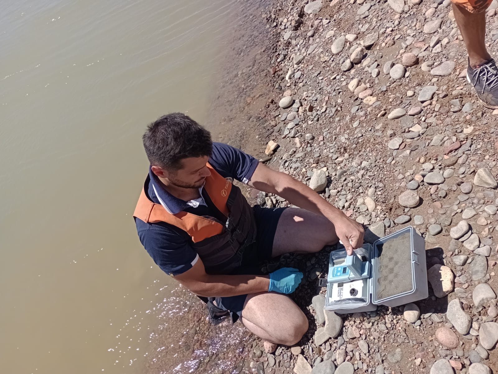
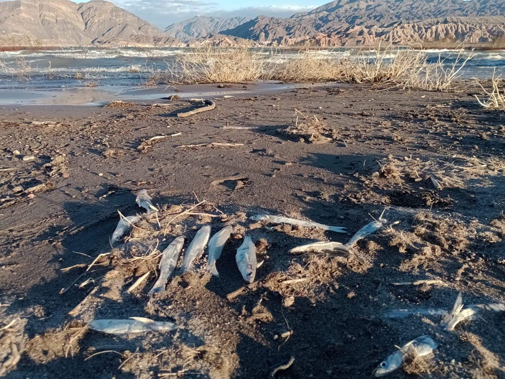
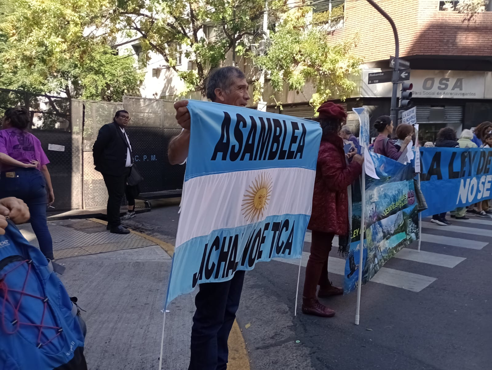
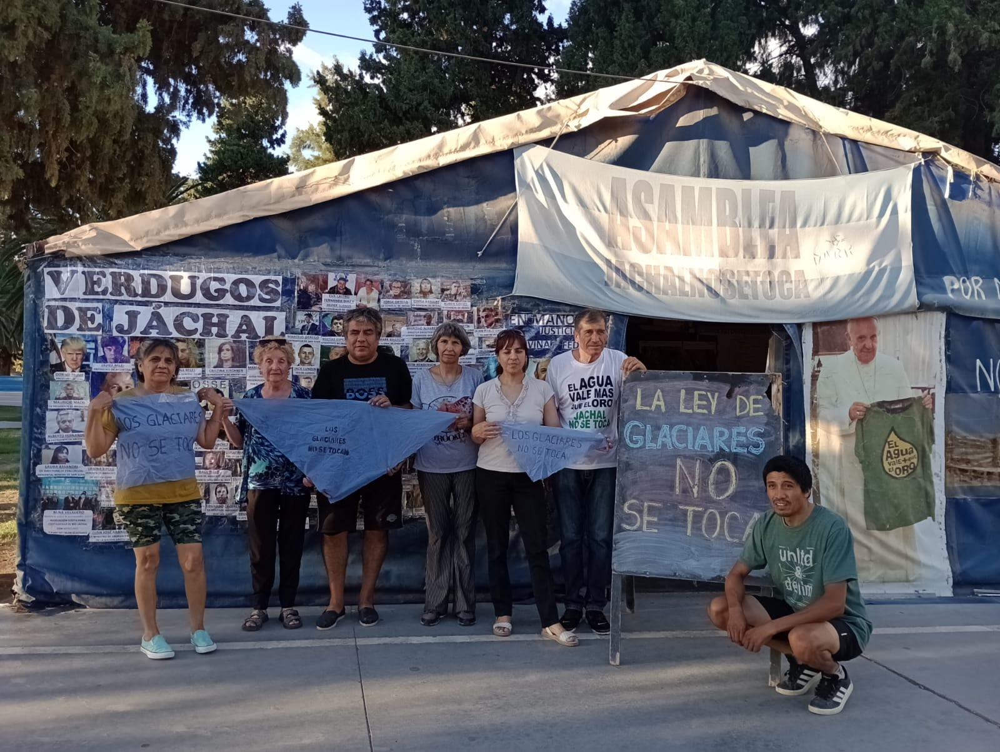

La vida en el norte de San Juan se escribe sobre un territorio atravesado por el silencio oficial y el veneno de las multinacionales. Una nueva investigación científica, realizada por biólogos del CONICET y diversas universidades del país, acaba de confirmar lo que la Asamblea Jáchal No Se Toca lleva dos décadas denunciando: la cuenca del río Jáchal está gravemente contaminada con aluminio, cobre, arsénico, cadmio y manganeso. El foco de esta sopa tóxica apunta directo a la mina Veladero, operada por las transnacionales Barrick Gold (Canadá) y Shandong Gold (China).
El informe no solo detectó niveles alarmantes de metales en el agua y en los peces muertos que aparecieron en el dique Cuesta del Viento, sino que establece un nexo temporal contundente: la contaminación se sostiene y acrecienta desde 2005, justo el año en que comenzó la explotación del yacimiento. Frente a este escenario de envenenamiento crónico, la Asamblea Jáchal No Se Toca alza la voz para señalar a los responsables: el gobierno municipal, el provincial y el nacional, acusados de complicidad y de proteger los intereses de las corporaciones por encima de la vida y el derecho humano al agua.
En diálogo con La Gaceta Clara Zetkin, Saúl Zeballos, referente de la Asamblea, desmenuza los detalles de este nuevo estudio, repasa un historial de al menos nueve derrames contaminantes y expone cómo la impunidad empresarial se profundiza con las recientes leyes RIGI y Súper RIGI, que buscan ampliar un proyecto minero que ya ha convertido a Jáchal en una "zona de sacrificio".
Saúl: Antes que nada queremos agradecer a La Gaceta Clara Zetkin por darnos este espacio de difusión. Este nuevo estudio muestra que el aluminio y el cloro fueron los causantes de la mortandad de miles de peces en el Dique Cuesta del Viento en noviembre de 2025 y no la falta de oxígeno disuelto en el agua, como dijeron desde el poder ejecutivo y el poder judicial de San Juan.

El gobierno nacional ha impedido que la Asamblea Jáchal No Se Toca pueda dar a conocer esta contaminación minera por LRA51 Radio Nacional Jáchal, ejerciendo inconstitucionalmente censura previa. El gobierno de la provincia de San Juan mintió deliberadamente diciendo que la mortandad se debió a la falta de oxigeno disuelto en el Dique Cuesta del Viento, y no tiene ni un solo análisis que confirme esa grandísima mentira. En todos los análisis el oxígeno disuelto era óptimo para la vida de los peces.
El intendente de Jáchal tendría que realizar los análisis de agua establecidos por la ordenanza agua segura para controlar periódicamente la calidad del agua, pero en vez de eso protege a la mina Veladero incumpliendo con la ordenanza. En dos años y medio de gestión ha realizado un solo análisis de agua, y en ese análisis se comprobó la contaminación de la cuenca del río Jáchal con cloro.
El presidente Javier Milei, el gobernador Marcelo Orrego y el intendente Matías Espejo lo único que hacen es proteger a la Barrick Gold y la Shandong Gold, no les importa la población que vive aguas debajo de la mina Veladero. Nadie ha dado respuestas al pueblo de Jáchal.
Saúl: En Argentina se premia a los contaminadores de ríos como la mina Veladero. En marzo de 2026 el gobierno nacional le otorgó el RIGI a la Barrick Gold y la Shandong Gold para su mina Veladero. Hasta en el Congo se suspendió a la empresa minera Congo Dongfang Mining en noviembre de 2025 por haber provocado una mortandad de peces. Aquí se tapó la muerte de miles de peces aguas abajo de la mina Veladero y encima se la premió con el RIGI. Y por más que el precio del oro se duplicó desde que asumió Milei, éste no le cobra retenciones a la mina Veladero. El saqueo es total, igual que la contaminación minera.

El megaproyecto minero Vicuña también fue beneficiado con el RIGI y es el que, con su grandísimo consumo de agua (270 millones de litros de agua por día), terminará de secar el río Jáchal.
La Asamblea tiene el desafío de mostrar la realidad de la contaminación minera con una gran desproporción de fuerzas y con muy pocos recursos. Aprovechamos esta entrevista para agradecer el trabajo ad honorem realizado por los profesionales Rafael Lajmanovich, Ana Paula Cuzziol Boccioni, Guillermo Folguera y Paola Peltzer, que invirtieron su tiempo y sus conocimientos para dar un trascendental informe interpretativo que nos fue negado desde los organismos que tendrían que velar por el bien del pueblo.
Saúl: Las ampliaciones de la mina Veladero son solo pretextos para no presentar nuevos informes de impacto ambiental, la megaminería avanza a fuerza de violar leyes y contaminar ríos.
Saúl: El río Jáchal fue utilizado por la población de Jáchal para consumo humano hasta el año 2010, yo me crie tomando agua del río Jáchal. Desde el 2005 la mina Veladero entró en explotación y desde ese año extrae oro, plata, mercurio y otros metales que se lleva de contrabando dentro del lingote de metal doré. Por la preocupación de los jachalleros, por tener una minera en las nacientes del río Jáchal, nos construyeron un acueducto de 22 kilómetros para traernos agua pura desde el Acuífero de Pampa del Chañar o Acuífero de Huachi. Pero el río Jáchal sigue utilizándose para regar las hectáreas cultivables del valle de Jáchal. El gran problema es que los metales pesados como el aluminio o el mercurio traspasan la cadena alimentaria contaminando las verduras y, a través de ellas a quien las consume. O contaminando los peces o los animales de consumo humano y, a través de ellos a las personas que los consumen. Es una verdadera tragedia para nuestro pueblo.
Saúl: Los controles estatales brillaron por su ausencia, porque los controles en la megaminería no existen.

Desde el derrame de 2015 nosotros sabemos que la Barrick cada vez que tiene un derrame de cianuro desde la mina Veladero, le echa hipoclorito de sodio (una especie de cloro) al río para neutralizar el contenido de cianuro. Así lo contó por escrito la abogada de la Barrick Gold Jimena Daneri al Defensor del Pueblo de San Juan. Por eso es que el cloro es un elemento que delata los derrames mineros desde la mina Veladero. Están contaminando en forma permanente, por eso es que el intendente de Jáchal no quiere hacer los análisis de agua en forma mensual, como se hacía desde el año 2016.
Saúl: Cuando la ciencia está al servicio del pueblo, es ciencia digna, es ciencia que promueve el desarrollo de los pueblos, es ciencia que protege a los pueblos, y en este caso fue un aporte fundamental de los investigadores que nos permiten tomar conciencia de los alcances de los valores encontrados de aluminio y de cloro. Este informe interpretativo es esencial para conocer las implicancias de esa contaminación que mató miles de peces en el Dique Cuesta del Viento en noviembre de 2025 y poder dimensionar el grado de perversidad de nuestros gobernantes que no alertaron ni siquiera a los pescadores que van habitualmente a ese Dique.

Saúl: Como ya dije, el intendente Matias Espejo incumplió con la ordenanza desde que asumió. De esta forma se asegura el beneplácito de la Barrick Gold, al igual que el gobernador Orrego y que el presidente Milei. En megaminería no hay grieta, da lo mismo un intendente peronista, un presidente libertario o un gobernador del frente para el cambio. Todos protegiendo a las corporaciones mineras. Y el pueblo que se contamine, que se enferme y que se muera.
No tenemos dinero para organizar monitoreos ciudadanos. El Intendente Espejo tenía 120 millones de pesos para análisis de agua durante todo el año 2025. Es inalcanzable para nosotros. Lo que necesitamos es que los funcionarios cumplan con sus funciones, que el intendente Espejo haga los monitoreos en forma mensual como se hicieron desde 2016 a 2019, y más aún después de este informe en donde se muestra claramente la necesidad de monitorear en forma permanente la cuenca del río Jáchal y las fuentes de agua de las distintas poblaciones del departamento de Jáchal.
Los organismos de control que deberían vigilar y preservar el bienestar de la población, custodian los intereses de las corporaciones mineras, por eso no dicen nada. Nuevamente digo que necesitamos que cada funcionario cumpla con sus funciones, ¿sino para que están?
Saúl: Jáchal fue la prueba piloto para mostrar cómo debe entrar la megaminería.Menem en la década del 90 cerró en Jáchal la única fábrica de dulces y conservas que daba trabajo a muchas familias jachalleras. Nunca se realizó la red de canales secundarios para duplicar las hectáreas cultivables de Jáchal. Nunca se promocionó el turismo en Jáchal. Todo esto para que aceptemos sin resistencia la megaminería como la única fuente de trabajo.
Eso mismo está haciendo ahora Milei en toda la Argentina, están cerrando muchísimas fuentes de trabajo genuinas y verdaderamente sustentables, para que entre la megaminería en todas las provincias cordilleranas sobre las nacientes de nuestras fuentes de agua. Así de perverso es este plan. No les importa contaminar nuestros ríos y enfermar a nuestro pueblo.
Saúl: El gobierno de San Juan es el que debería aplicar esta sanción, pero mira para otro lado. Es más, miente descaradamente para no tener que confirmar otro derrame de la mina Veladero en sede administrativa. Por eso mintió diciendo que los peces habían muerto por falta de oxígeno disuelto en el agua, sin tener ningún análisis del CIPCAMI, ni de la UNCuyo, ni siquiera de SGS, que es el laboratorio externo de Barrick Gold, que diga que el oxígeno disuelto era menor a 7 miligramos por litro de agua.
La especie más afectada fueron pejerreyes, la bibliografía es concordante en asegurar que los pejerreyes viven perfectamente con por lo menos 5 miligramos de oxígeno disuelto por litro de agua. Y el poder judicial de San Juan lo único que hizo es confirmar la versión mentirosa del poder ejecutivo de San Juan. Nadie cumple la función para la que cobran suculentos sueldos.

Saúl: Radio Nacional Jáchal nos censuró, ejerció censura previa para que no diéramos a conocer los resultados de los análisis de los peces. La megaminería entra en los pueblos con mentiras y luego se sostiene con silencios, con ocultamientos como los del intendente Matías Espejo, con más mentiras como las del gobierno de Marcelo Orrego, con prohibiciones como las ejercidas en Radio Nacional por el gobierno de Javier Milei. Es la manera que entre todos los estratos de gobierno sostienen la megaminería contaminante.
Pero hemos aprendido a no quedarnos callados, a defender con una carpa en la plaza pública nuestras fuentes de agua por más de 10 años, a pedir justicia por más que el poder judicial federal y de san juan nos nieguen ese derecho, a no creer en la palabra falsa de los CEO de las corporaciones mineras, ni las palabras de sus cómplices en el gobierno. Hemos aprendido que el Pueblo salva al Pueblo.
Saúl: A todos los pueblos les pedimos que tomen en cuenta nuestro ejemplo, que no los dejen entrar, porque cuando entra la megaminería se contaminan las fuentes de agua, pero también se contamina hasta la justicia. Exijan a sus gobernantes que desarrollen fuentes de trabajo genuinas y sustentables. Aquí llegaron diciendo que íbamos a tener desempleo cero con la megaminería, y después de 20 años el mayor dador de empleo sigue siendo el municipio de Jáchal con mil contratados que cobran muy por debajo de la línea de pobreza, con contratos basura de 250 mil pesos. No caigan en los cantos de sirenas de la megaminería. Son puras mentiras.
Saúl: La solidaridad activa debe ser con cada lugar en donde decidimos vivir. Nuestro país necesita de ciudadanos patriotas que se interesen por el bienestar del pueblo donde cada uno vive. Es necesario invertir parte de nuestro tiempo para construir un futuro mejor para todos. Faustino Esquivel, otro integrante de la Asamblea Jáchal No Se Toca, siempre dice: si cada jachallero piensa únicamente en salvar su quiosquito, perderemos Jáchal y con ello todos los quiosquitos se perderán.
Por eso actuemos pensando en los niños de nuestros pueblos, para que les dejemos un país en donde se pueda vivir con dignidad, y sepamos bien que sin agua pura no habrá ninguna chance de vivir dignamente. Defendamos las fuentes de agua de toda nuestra República Argentina, defendamos nuestros glaciares y nuestros acuíferos. Las corporaciones mineras solo vienen a saquearnos y secarnos.